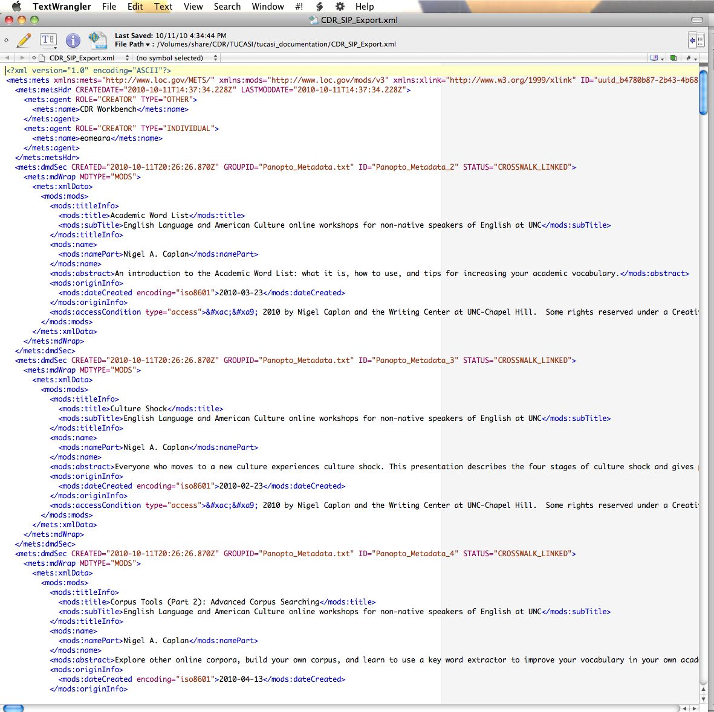

When you are done staging the files and mapping metadata (if you have any), the system will have built out a robust METS file (see Figure 6) that contains the arrangement, location, UUID, checksums and MODS records for all the files you staged.
To export your METS file, right-click on the project name in the Project Navigator window. Select "Export", and in the next dialog, select "Carolina Digital Repository Submission (METS)" under "Other". Click "Next". In the next dialog, specify the export location. The Workbench requires this to be in the Project workspace. Click "Finish" and presto--your METS file will be generated as an XML document.
If you are not using the METS file as a manifest for ingest into a repository, you can use this METS file as a wrapper that documents relationships between files and metadata (both descriptive and technical). The wrapper can help provide a level of documentary control over collections if they are residing in a dark archive or some other secure server space.
Figure 6. Example of METS output from Workbench